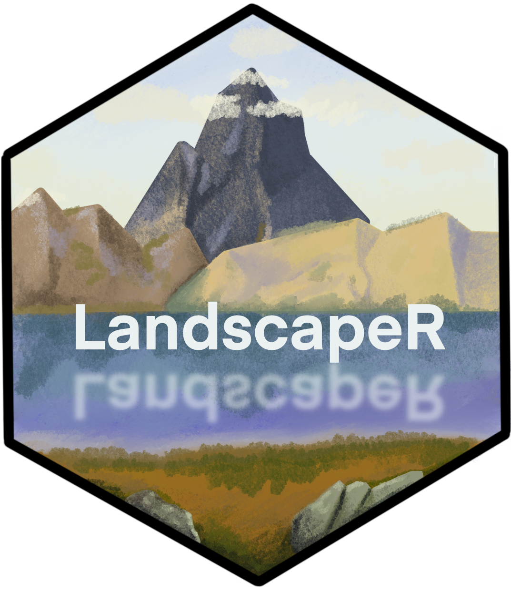
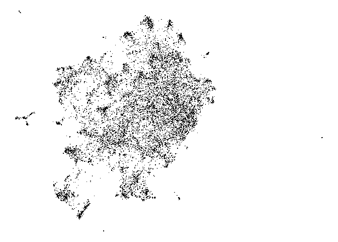
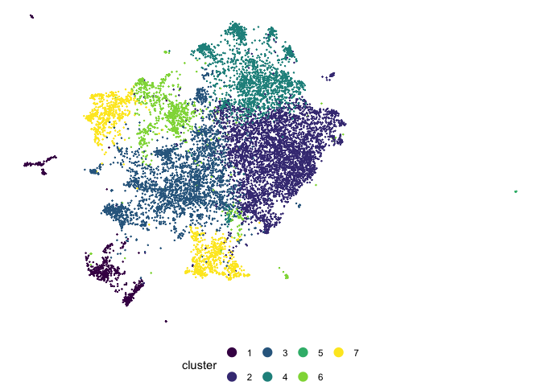
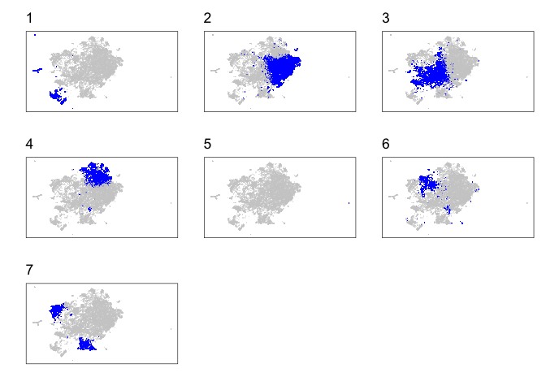
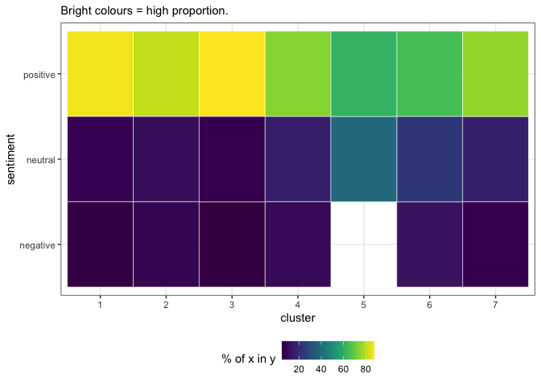

LandscapeR is our R Package for exploring text data which has been transformed into a navigable landscape. The package makes use of cutting-edge language models and their dense word embeddings, dimensionality reduction techniques, clustering and/or topic modelling as well as Shiny for an interactive data-exploration & cleaning UI.
If the conversation has been mapped appropriately, you will find that mentions close together in the Shiny application/UMAP plot have similar meanings, posts far apart have less similar meanings. This makes it possible to understand and explore thousands, hundreds of thousands, or even millions of posts at a level which was previously impossible.
Installation
You can install the development version of LandscapeR using the install_github function from the devtools package:
devtools::install_github(repo = "jpcompartir/LandscapeR")Examples
We can take this table of text:
library(LandscapeR)
library(tidyverse)
ls_example
#> # A tibble: 11,226 × 9
#> document text cluster clean_text date sentiment permalink
#> <dbl> <chr> <dbl> <chr> <dttm> <chr> <chr>
#> 1 1 @Shruthi… 4 shruthio3… 2022-10-26 12:17:22 positive <a href=…
#> 2 2 anyone u… 2 edge nonw… 2022-10-26 11:44:36 positive <a href=…
#> 3 3 Non tech… 7 tech peop… 2022-10-26 10:20:16 neutral <a href=…
#> 4 4 I really… 3 minority … 2022-10-26 06:25:23 positive <a href=…
#> 5 5 Chrome u… 2 chrome to… 2022-10-26 05:02:06 neutral <a href=…
#> 6 6 I still … 3 believeha… 2022-10-26 03:16:42 positive <a href=…
#> 7 7 Try edge… 2 edge rece… 2022-10-26 02:38:57 positive <a href=…
#> 8 8 telling … 2 telling t… 2022-10-26 01:49:56 positive <a href=…
#> 9 9 When I m… 7 move ptz … 2022-10-26 01:02:29 negative <a href=…
#> 10 10 I repent… 4 repent fi… 2022-10-25 23:26:41 positive <a href=…
#> # ℹ 11,216 more rows
#> # ℹ 2 more variables: V1 <dbl>, V2 <dbl>And transform it into a navigable landscape:
ls_example %>% ls_plot_static()
#> Warning in .setup_fonts(): Font 'Segoe UI' not found in system, download and
#> install individually to access full package functionality
#> Warning in .setup_fonts(): Font 'NeueHaasGroteskText Pro Md' not found in
#> system, download and install individually to access full package functionality
#> Warning in .setup_fonts(): Font 'GT Walsheim Pro' not found in system, download
#> and install individually to access full package functionality
We can add colour to a grouping variable to see where our groups sit and how they relate:
ls_example %>%
mutate(cluster = factor(cluster)) %>%
ls_plot_group_static(group_var = cluster)
We can home in on each group:
ls_example %>%
mutate(cluster = factor(cluster)) %>%
ls_plot_group_facet(group_var = cluster)
An interesting use case which can be used to inform the LandscapeR investigative process when comparing two grouping variables, such as cluster and sentiment, or product and topic etc. is the ls_plot_variation_matrix() function:
ls_example %>%
ls_plot_variation_matrix(cluster, sentiment)
#> Loading required namespace: viridis
Shiny Application
For the most up-to-date version of the Shiny application, you should install the LandscapeRGolem package:
remotes::install_github(repo = "jpcompartir/LandscaperGolem")Check out the Running Your App Locally vignette for tips on how to run the app.